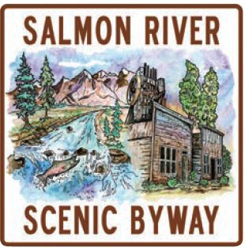

The northern end of the Salmon River Scenic Byway begins on
the Montana border at the Lost Trail Pass (elevation 6,995 feet).
Lewis and Clark came this way in 1805, and the spectacular view
from this vantage point has changed little since that famous
exploration of the West two centuries ago.
The route follows the Salmon River - also called the
River of No Return - through the Salmon-Challis
National Forest through the historic city of Salmon. The river and
its forks serve as important natural pathways into Idaho's rugged
back country. The deer, elk, and moose that often graze along the
hills and meadows that line this road provide a glimpse of the
wild country beyond.
Along the way, the town of Challis and the Land of the Yankee
Fork Historic Area are just two points of interest, the latter being
among Idaho's most famous mining areas. And as you head
southwest along Idaho 75 toward Stanley, you'll begin to see
glimpses of the majestic Sawtooth Mountains ahead before
beholding their full splendor as you drop into town.